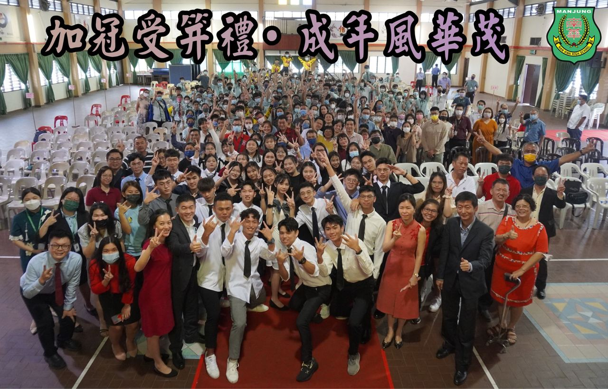
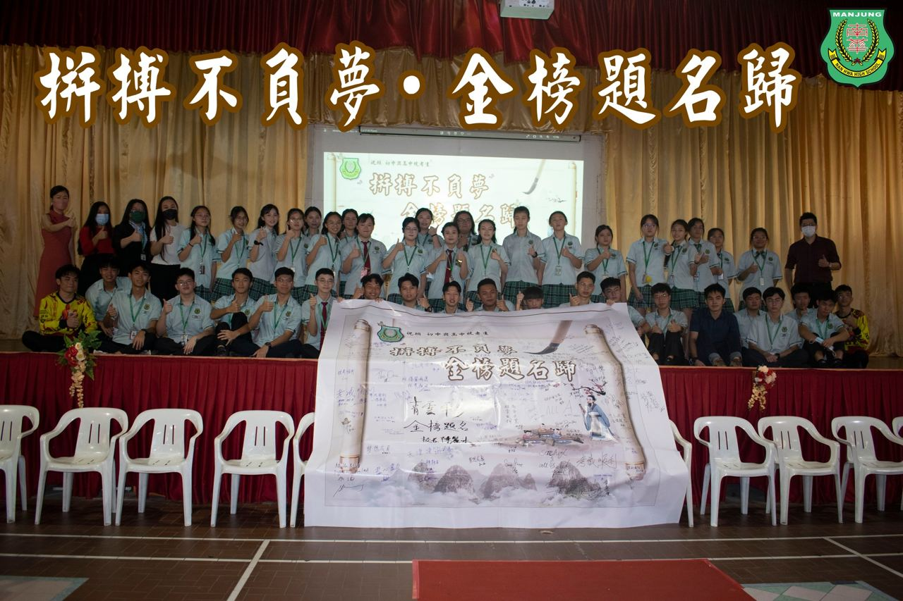
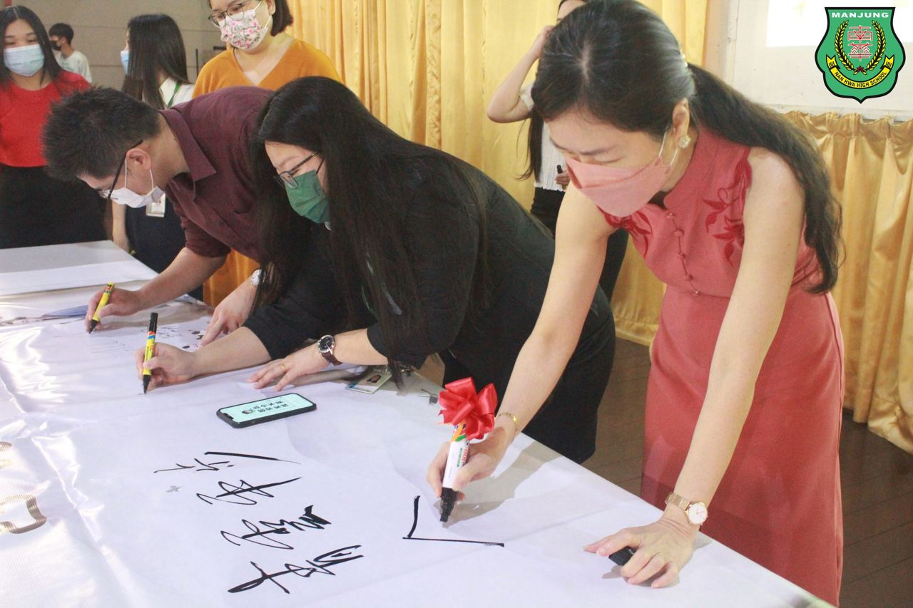
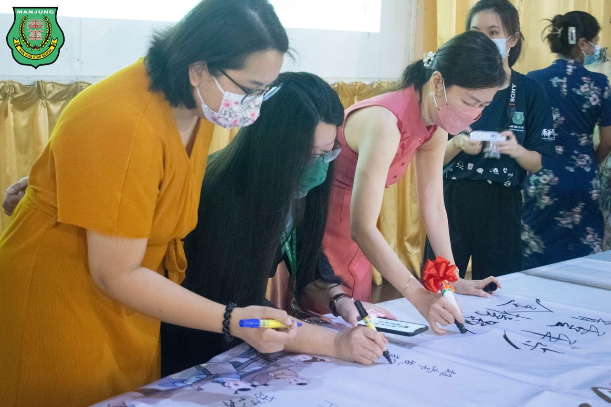
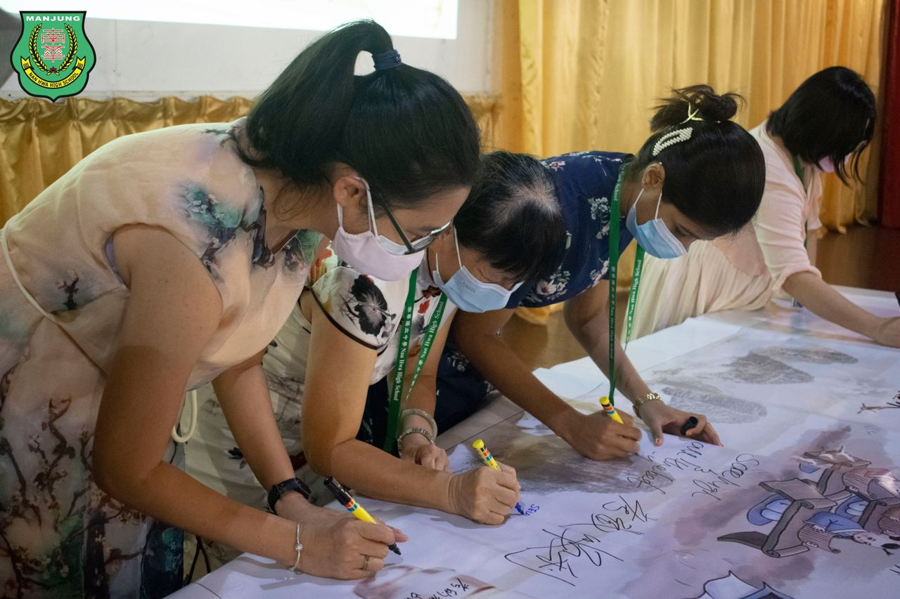
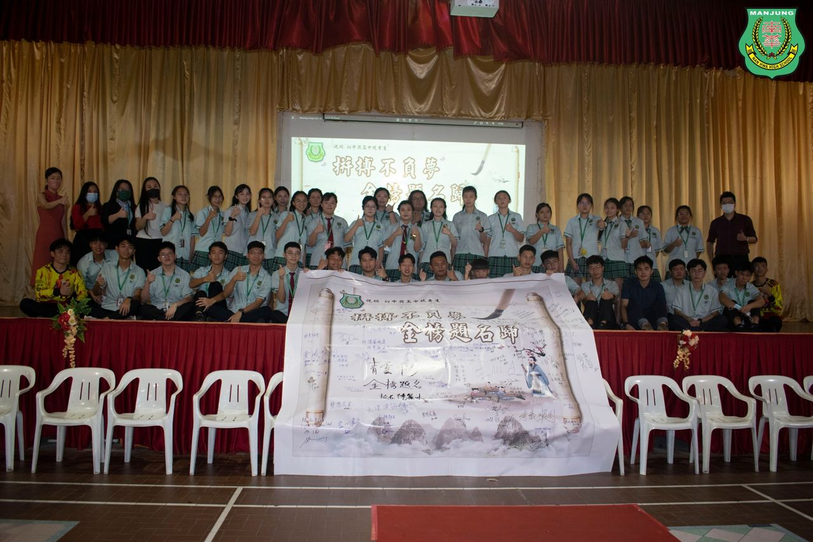
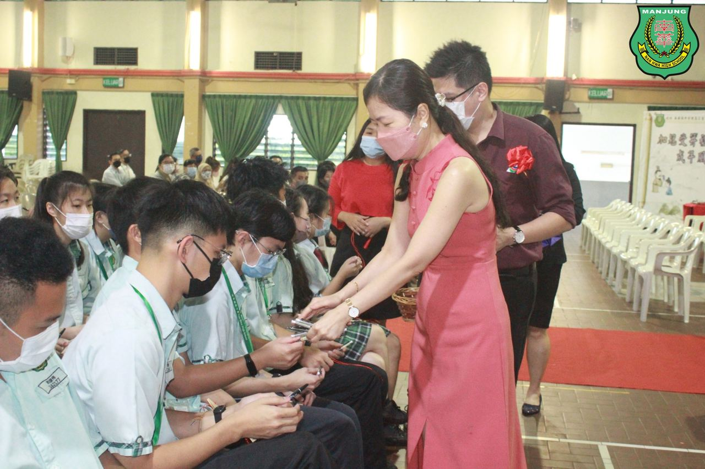
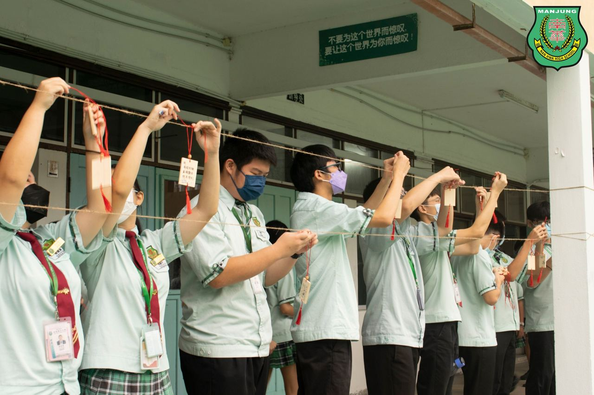

2022年 南华独中
2022年 南华独中
🎀成年礼暨会考许愿大会✍
日前于南华独中礼堂进行的“成年礼暨会考许愿大会”圆满落幕。
【成年礼】
南华独中高三的学生成年在即，特此举办以“加冠受笄礼·成年风华茂”为主题的成年礼，邀请高三礼生的家长出席为孩子加冠受笄，系上领带与丝巾，见证孩子长大成人的一刻。
礼生在接受加冠受笄礼前，献唱一曲“感恩的心”送给台下的父母与长辈，并献上感恩词；随后礼生透过奉茶、捶肩与拥抱，传达自身对养育成人之恩的感激；最后再一口饮下“成年醴”，象征着脱去稚气，正式从少年跨入青年。
【会考许愿大会】
距离华文独立中学统一考试（UEC）已不足一个月，为了让初三及高三的考生作好完全的赴考准备，本校南华独中特此举办“拼搏不负梦·金榜题名归”会考许愿大会。
在校长陈丽冰博士主持及带领下，老师在许愿布条上写下对考生的祝福，考生则许愿会考目标及展望。此外，每位高三生获赠一支文昌笔，寓意着祝福考生“文运昌盛·金榜题名”。
全校学生则是在许愿牌上写下对学哥学姐的祝福，并挂在学校校舍中央，最后高喊三遍“拼搏不负梦·金榜题名归”，全校在一片虔诚且温馨的氛围下，结束今年的会考许愿大会。
#成年礼 #会考许愿大会
#统考 #加冠 #受笄 #文昌笔
#加冠受笄礼成年风华茂
#拼搏不负梦金榜题名归
#南华独中 #曼绒 #实兆远







